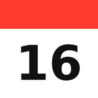

ככה הוא נפתח כמו אפליקציה ושולח התראות.
לא רואים שיתוף? לוחצים על ••• בסרגל ואז שיתוף.
גוגל דורשת מפתח חיבור אישי (Client ID). עושים את זה פעם אחת, בערך 5 דקות, מהמחשב או מהטלפון:
https://token-byte.github.io
הצבע נקבע אוטומטית לפי מילים בשם האירוע. הראשונה שמתאימה קובעת.
גרסה
באייפון, אם אין כפתור האזנה, לוחצים על המיקרופון במקלדת. קיצור: הכתבת טקסט ואז פתיחת הכתובת עם הטקסט אחרי ?add=